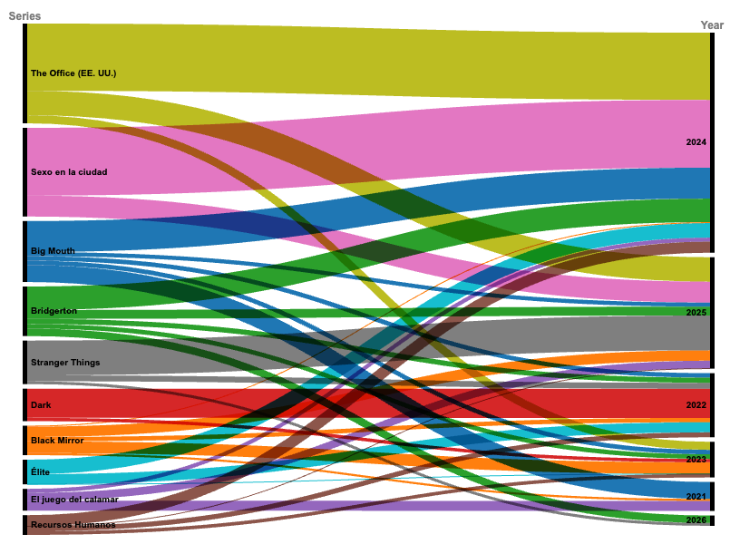

Consumo por año
¿Cuánto tiempo pasan en la plataforma? - Observa cómo cambian (o no tanto) los patrones de visualización de cada perfil.
Preferencias de Género
¿Qué tipo de contenido prefiere cada perfil? Mirá los géneros favoritos de cada Chica Soqueff.
Series Más Vistas
¿Cuáles son las series que más ven las chicas? - Las series favoritas de cada perfil revelan personalidades, humores y guilty pleasures.
Batalla Cultural de Olu
¿Series en disputa?: Reírse de las ridiculeces de Michael Scott y enamorarse de Jim y Pam, o entender las relaciones entre los 20's y los 30's y armar buenos outfits.

Viaje de Series de Olu
¿Cómo cambiaron las preferencias de Olu? - La evolución temporal de las series favoritas de Olu muestra cómo sus gustos fluyen y cómo algunas series reaparecen a través de los años (2021-2026).

Patrones de Consumo por Día
¿Qué día es el binge day?.